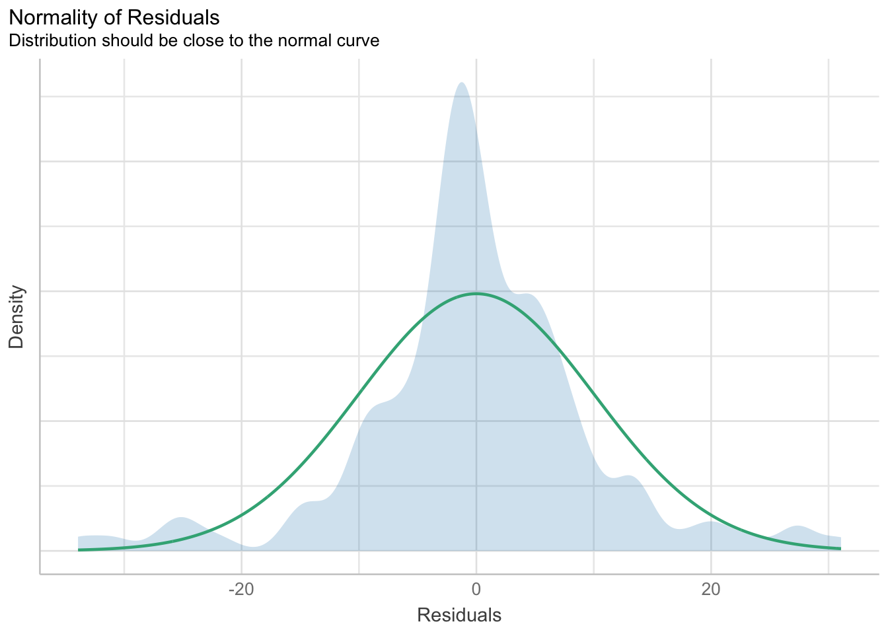
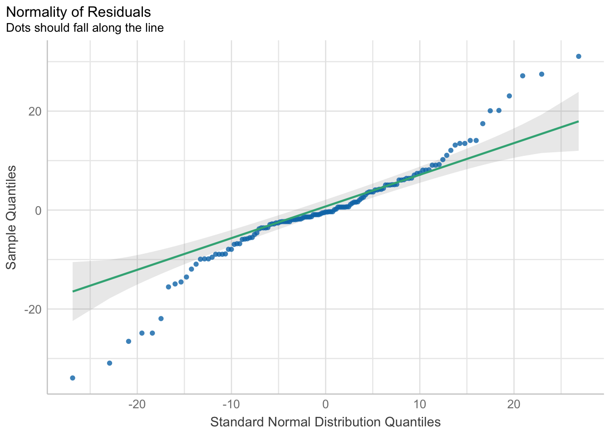

pacman::p_load(tidyverse,afex)39 afex is for ANOVA
So far, we have been running our ANOVA using either lm() or aov(), which is just a wrapper for lm(). This has been done for pedagogical reasons: (1) to re-enforce that ANOVA is just a variant of linear regression and (2) having you write out the formula gives you a better idea of how the model is specified (i.e. Scores as a function of Lecture, Presentation, and their interaction = Scores~Lecture + Presentation + Lecture * Presentation).
That said, there are cleaner tools for running simple ANOVA in R. For example, afex offers several clean and intuitive alternatives for running ANOVA. In fact, afex might be preferable, as the output gives you most everything you need to report your ANOVA, without using sjstats::anova_stats(), and as we enter into Repeated Measures ANOVA, afex methods make the necessary corrections for you if your data violates certain assumptions needed for ANOVA.
Indeed, while I have been stressing the lm() method to re-enforce that ANOVA and linear regression are two sides of the same coin, when performing a simple ANOVA I hardly ever use this method (you can hate me now / but I won’t stop now). I typically use afex::aov_ez() unless I am planning some very complex comparisons or analyses related to my model. With aov_ez() we can easily specify the ANOVA model by inputting our parameters into the function. In what follows we will take a look at how to run ANOVA using two afex methods as an alternative to lm(). This will become critical, as when we get to running Repeated Measures ANOVA, I do not recommend using lm() (not that its wrong, only that it requires extra steps for assumption checks)
39.1 Getting the data:
To start, let’s grab (and clean) some familiar data (this is from the Factorial ANOVA walkthrough). Note that I am cleaning up the numeric coding to reflect my factor levels
dataset <- read_delim("https://www.uvm.edu/~statdhtx/methods8/DataFiles/Sec13-5.dat", "\t", escape_double = FALSE, trim_ws = TRUE)Rows: 135 Columns: 4
── Column specification ────────────────────────────────────────────────────────
Delimiter: "\t"
dbl (4): Task, Smkgrp, score, covar
ℹ Use `spec()` to retrieve the full column specification for this data.
ℹ Specify the column types or set `show_col_types = FALSE` to quiet this message.dataset$Task <- recode_factor(dataset$Task, "1" = "Pattern Recognition", "2" = "Cognitive", "3" = "Driving Simulation")
dataset$Smkgrp <- recode_factor(dataset$Smkgrp, "1" = "Nonsmoking", "2" = "Delayed", "3" = "Active")39.2 Hey participant! You got any ID?!?
When I introduced ANOVA a few weeks back, you may remember that I stressed that it would be a good idea to ensure that your dataset contained a column that assigned each unique participant a unique ID. For the first few weeks of ANOVA, this was simply good practice, but ultimately not necessary. This is no longer the case. Moving forward, when running ANOVA that has a repeated measures / within-subjects design, you need to have a participant ID column, in order for R to match the appropriate data. That is if Johnny is has four scores in the data set (e.g., Johnny’s score on Monday, Tues, Thurs, and Fri) R uses the participant ID to match each of those scores with one another. This is because, when running a repeated measures design, the ANOVA needs to take into account within-subjects correlations of scores (i.e., Johnny’s scores are more tightly correlated with one another than they are with Jenny’s scores).
For now, we are just introducing afex::aov_ez() so we’ll simply create a column that assigns each row / score a unique participant ID. This would be consistent with the between-subjects designs we have encountered up to this point. However, note that if R finds instances where PartID are the same it will assume that data comes from the same participant (i.e., we have a within-subjects or repeated measures design). For our purposes now, this is easily solved by simply creating a column that runs from 1 to the number of observations in our data. After that we can proceed with the ANOVA.
# create a PartID column and number, every score comes from a unique person
dataset$PartID <- seq_along(dataset$score)
39.3 running an ANOVA, the aov_ez way
Below I spell out how to run an ANOVA using aov_ez(). Please note which need to be input as strings (i.e., have quotations around them), and which are input as objects or numbers.
aov_model <- afex::aov_ez(
id = "PartID", # column identifying your participants
dv = "score", # column that contains your dv
data = dataset, # your data frame
between = c("Smkgrp","Task") # column(s) containing your between IV(s)
# within = NULL, # column(s) containing your within IV(s)
# covariate = NULL, # column(s) containing your covariate(s)
# observed = NULL,
# fun_aggregate = NULL,
# type = 3, # type of Sum of Squares
# factorize = TRUE,
# check_contrasts = TRUE,
# return = "afex_aov",
# anova_table = list(es = "pes")
) # adding partial eta squared effect sizeContrasts set to contr.sum for the following variables: Smkgrp, TaskNote that above I specified every argument in the function. This was not necessary (indeed if you use Rstudio to help you fill this in, you’ll notice that many of the defaults are NULL). Briefly running down each of the arguments for aov_ez():
-
id: column identifying your participants -
dv: column that contains your dv -
data: your data frame -
between: column(s) containing your between IV(s) -
within: column(s) containing your within IV(s) -
covariate: column(s) containing your covariate(s) for ANCOVA -
observed: column of any variables are observed (i.e, measured) but not experimentally manipulated (typically NULL) -
fun_aggregate: function for aggregating the data before running the ANOVA, defaults to mean -
type: type of Sum of Squares, see the Field text on when to change this value -
factorize: should between subject factors be factorized before running the analysis. This is useful if your data is still numerically coded. This needs to be set to false if you have a covariate -
check_contrasts: should between-subject factors be checked and (if necessary) changed to be “contr.sum”, usually leave this asTRUE -
return: what kind of object do you want to return? e.g.,lm,aov. I would recommend using the defaultafex_aov -
anova_table: list of further arguments passed to function producing the ANOVA table including what kind of effect size (partial v. general eta squared)? and any corrections (e.g., bonferroni).
For now I want to comment on a few of the choices I made. For type I selected Type III sum of squares. This is typically the type that we will choose in ANOVA, however see Field, Ch 11, “Jane Superbrain 11.1” for an excellent overview of the different Types of Sum of Squares and when to use different values. Also you’ll notice I made a few adjustments in my anova_table output via list(). These were to get the table to output partial eta-squared es="pes" for my effect size.
Let’s take at the aov_model we just created:
aov_modelAnova Table (Type 3 tests)
Response: score
Effect df MSE F ges p.value
1 Smkgrp 2, 126 107.83 8.41 *** .118 <.001
2 Task 2, 126 107.83 132.90 *** .678 <.001
3 Smkgrp:Task 4, 126 107.83 2.94 * .085 .023
---
Signif. codes: 0 '***' 0.001 '**' 0.01 '*' 0.05 '+' 0.1 ' ' 1We can also get a more comprehensive look at our ANOVA table by:
aov_model %>% summary()Anova Table (Type 3 tests)
Response: score
num Df den Df MSE F ges Pr(>F)
Smkgrp 2 126 107.83 8.4098 0.11777 0.000373 ***
Task 2 126 107.83 132.8954 0.67840 < 2.2e-16 ***
Smkgrp:Task 4 126 107.83 2.9430 0.08545 0.022972 *
---
Signif. codes: 0 '***' 0.001 '**' 0.01 '*' 0.05 '.' 0.1 ' ' 1(This second way will factor more in our discussions of repeated measures ANOVA)
The output contains (from left to right) the effect tested, our degrees of freedom, the mean square error, F-value, partial eta squared (effect size) and p-value.
Looking at the attributes of our model by typing attributes(aov_model) reveals that there are several $names associated with our aov_model. Each of these names change the format of the output of the model (“anova_table”, “aov”, “Anova”, “lm”) or let us peek back at the “data” in either $long or $wide format. For example, try running each of the following lines separately to see the output.
aov_model$anova_table
aov_model$Anova
aov_model$lm
aov_model$dataFrom these options:
I personally prefer $anova_table. As we’ll see when running repeated-measures / within-subjects ANOVA, $anova_table does an extra bit of work that will be useful to us.
aov_model$anova_tableAnova Table (Type 3 tests)
Response: score
num Df den Df MSE F ges Pr(>F)
Smkgrp 2 126 107.83 8.4098 0.11777 0.000373 ***
Task 2 126 107.83 132.8954 0.67840 < 2.2e-16 ***
Smkgrp:Task 4 126 107.83 2.9430 0.08545 0.022972 *
---
Signif. codes: 0 '***' 0.001 '**' 0.01 '*' 0.05 '.' 0.1 ' ' 139.4 Running your assumptions tests using performance
In the past I would have spend time showing you how to extract residuals from the afex ANOVA in order to run you assumption checks. That said, since I’ve discovered the performance library earlier this year, I’m loving it more and more for handling these checks.
39.4.1 normality using the performance package
In this case we can run a check of the normality assumption by taking our model performing the following steps
39.4.1.1 visualization plots
Using performance We can produce two visualization plots to help us. First we can produce a desity plot (like a histogram) comparing the distribution of residuals to an ideal normal. This can be accomplished as follows:
performance::check_normality(aov_model) %>% plot()
Second we can produce a QQ plot using a similar call, but specify type="qq":
## QQ
performance::check_normality(aov_model) %>% plot(type = "qq")
39.4.1.2 Shapiro-Wilkes
Considering both plots don’t look great, we can follow-up with a Shapiro Wilkes test. Same basic call, but instead of sending to a plot, we just print the output:
# run norm check, must send to print
performance::check_normality(aov_model) %>% print()Warning: Non-normality of residuals detected (p < .001).39.4.2 normality bootstrapped
If we want to use the bootstrap method from my custom code, we can manually grab the residuals of our aov_model and send it to our function. To get the residuals we would need to type:
resid(aov_model)From here we can submit these residuals to the appropriate methods for visual inspection and testing:
39.4.3 homogeneity assumption using performance
I’m also loving performance since it doesn’t require us to rewrite the model for homogeneity checks (in years past this was a necessary step if using afex for ANOVA)
pacman::p_load(performance)
aov_model %>% performance::check_homogeneity()Warning: Variances differ between groups (Levene's Test, p = 0.000).
39.5 doing more with afex
The afex package can be used for much more that simple running ANOVA. For example it’s got its own plotting functions and can even be used for multi-level modeling (although I typically on use it for quick and dirty modeling). Much of this is outside the scope of this class, but if you have time I certainly recommend you check out https://github.com/singmann/afex.